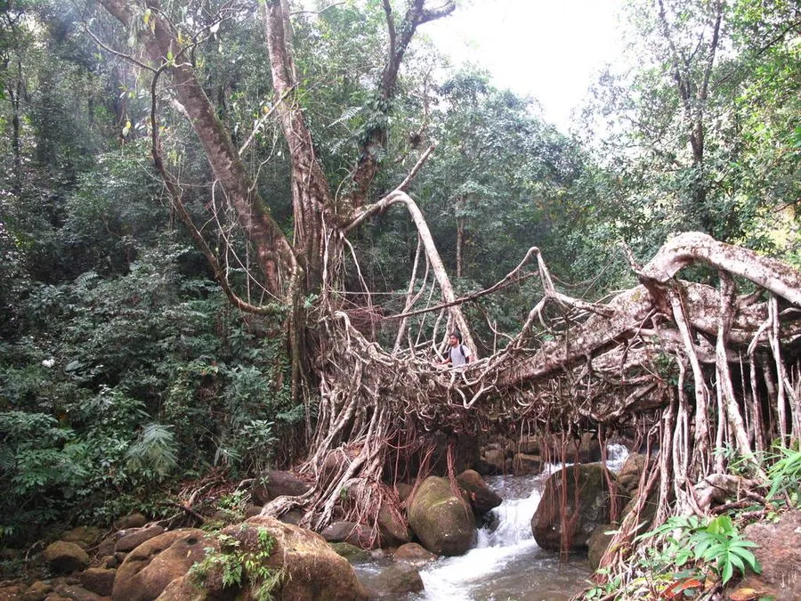

乔木 · 植物界
橡胶榕 Ficus elastica

原产东南亚的常绿大乔木，叶片厚革质光亮，富含白色乳汁，曾用于提取橡胶，也是常见的观叶盆栽植物。
- 分类
- 门被子植物门纲木兰纲目蔷薇目科桑科属榕属
- 栖息环境
- 热带亚热带地区的雨林、村旁与庭院，喜高温多湿，不耐寒
- 地理分布
- 原产印度、缅甸至马来西亚、印度尼西亚，中国云南、广东等地栽培
- 保护级别
- 暂无评估；中国未列入国家重点保护野生植物名录
物种志
橡胶榕为常绿大乔木，高可达 30 m，树皮灰褐色，体内含丰富的白色乳汁；叶片互生，厚革质，椭圆形至长圆形，长 10–30 cm，表面深绿光亮，侧脉平行而明显，托叶包裹顶芽、脱落后留下环状托叶痕。隐头花序生于叶腋，榕果卵形，成熟时黄绿色。橡胶榕的气生根发达，在热带雨林中常缠绕其他树木生长。
橡胶榕原产印度、缅甸至马来西亚、印度尼西亚等地，中国云南、广东、广西、海南等地有栽培，喜高温多湿、光照充足，不耐寒，适宜疏松肥沃、排水良好的土壤。其乳汁曾用于提取橡胶，但产量与质量不如巴西橡胶树，如今主要作为观叶植物与园林树种；大叶品种常作盆栽，耐阴、易养护。木材可制器具，树皮纤维可制绳。橡胶榕对室内空气有一定净化作用，但乳汁有刺激性，接触后需清洗。
形态与习性
- 株高可达 30 m，体内含白色乳汁
- 叶厚革质，长 10–30 cm，表面光亮
- 花期隐头花序，热带地区全年可开花
- 果期榕果卵形，成熟时黄绿色
- 光照喜光，也耐半阴
- 水分喜湿润，怕积水
- 主要用途观叶盆栽、园林绿化、乳汁曾用于提取橡胶
趣味知识
- 橡胶榕的叶片厚革质、深绿光亮，新叶常呈红色，是常见的观叶植物。
- 橡胶榕的白色乳汁曾用于提取橡胶，但产量远不及巴西橡胶树。
- 橡胶榕的托叶脱落后会在茎上留下环状痕迹，是辨认它的特征之一。
- 橡胶榕在热带雨林中靠气生根缠绕寄主树木生长，可长成高大的乔木。